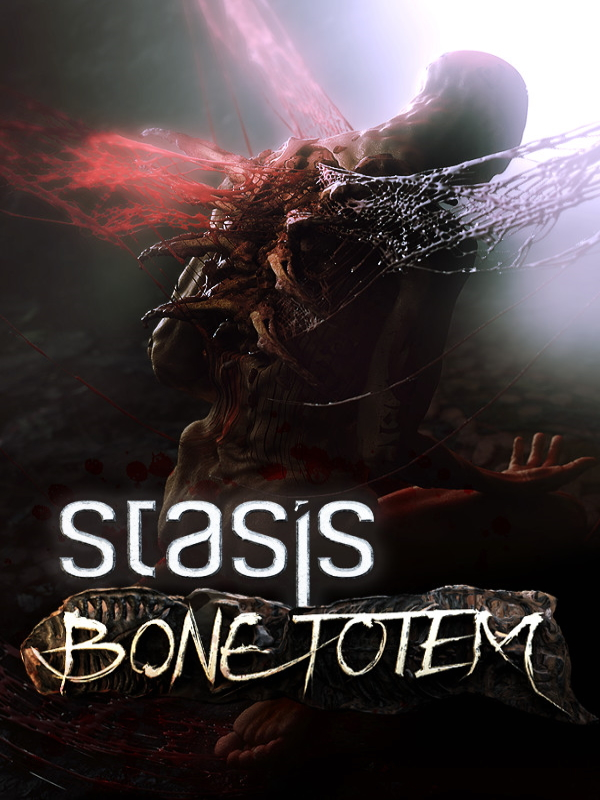

STASIS : BONE TOTEM
STASIS : BONE TOTEM
Details
|  | |
| Playtime | Not Played |
| Last Activity | Never |
| Added | 11/14/2024 17:42:29 |
| Modified | 11/14/2024 17:42:49 |
| Completion Status | Not Played |
| Library | Epic |
| Source | Epic |
| Platform | PC (Windows) |
| Release Date | 5/31/2023 |
| Community Score | 70 |
| Critic Score | |
| User Score | |
| Genre | Adventure Indie |
| Developer | The Brotherhood Games |
| Publisher | Feardemic The Brotherhood Games |
| Feature | Single-Player |
| Links | Steam Discord Twitch GOG Official Epic YouTube |
| Tag | [GGDeals] Synced |
Description
Plunge into the depths of STASIS: BONE TOTEM, the latest installment in the STASIS anthology.
A new story, new characters, and a new underwater environment to explore.

Follow Mac and Charlie, a husband and wife duo, who make their living scouring the ocean for salvage. But, when they stumble upon an abandoned oil rig in the Pacific Ocean, they uncover a horrific secret that Cayne Corporation will do anything to keep hidden.
As you embark on your adventure playing Mac, Charlie, and their trusty Super-Toy, Moses, you'll encounter an immersive narrative filled with spine-tingling horror and unexpected twists. Combining the thrilling storytelling of STASIS and a tense underwater setting, STASIS: BONE TOTEM offers a personal story that will test the limits of family resilience.

Navigate through a massive underwater base, complete intricate puzzles, and solve an ancient secret concealed at the bottom of the ocean. BONE TOTEM features the same isometric, point-and-click gameplay that made STASIS a classic fan favorite, but with a new cast and a unique setting that will leave you gasping for breath.

With stunning visuals, a music score by Mark Morgan, a screenplay written by a Hollywood ace, voice acting by veteran actors, and a gripping storyline that will keep you on the edge of your seat - STASIS: BONE TOTEM is a must-play game for horror and sci-fi adventure fans.

So what are you waiting for? Dive into the unknown and uncover the BONE TOTEM beneath the waves.

A new story, new characters, and a new underwater environment to explore.
Follow Mac and Charlie, a husband and wife duo, who make their living scouring the ocean for salvage. But, when they stumble upon an abandoned oil rig in the Pacific Ocean, they uncover a horrific secret that Cayne Corporation will do anything to keep hidden.
As you embark on your adventure playing Mac, Charlie, and their trusty Super-Toy, Moses, you'll encounter an immersive narrative filled with spine-tingling horror and unexpected twists. Combining the thrilling storytelling of STASIS and a tense underwater setting, STASIS: BONE TOTEM offers a personal story that will test the limits of family resilience.
Navigate through a massive underwater base, complete intricate puzzles, and solve an ancient secret concealed at the bottom of the ocean. BONE TOTEM features the same isometric, point-and-click gameplay that made STASIS a classic fan favorite, but with a new cast and a unique setting that will leave you gasping for breath.
With stunning visuals, a music score by Mark Morgan, a screenplay written by a Hollywood ace, voice acting by veteran actors, and a gripping storyline that will keep you on the edge of your seat - STASIS: BONE TOTEM is a must-play game for horror and sci-fi adventure fans.
So what are you waiting for? Dive into the unknown and uncover the BONE TOTEM beneath the waves.